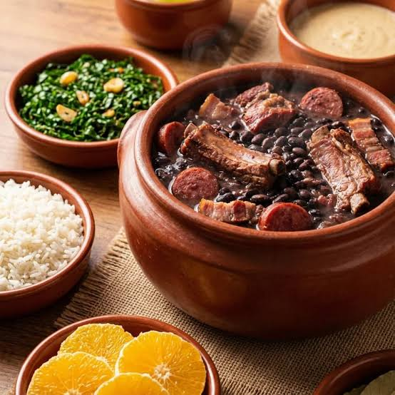

Brazilian Black Bean Stew

Description:
Feijoada is a hearty, rich black bean stew packed with various cuts of pork and beef. It is widely considered the national dish of Brazil, traditionally slow-cooked and served with rice, farofa, and orange slices.
This comforting meal is perfect for weekend gatherings with family and friends, combining smoky flavors with deep, savory black beans
Ingredients:
- 2 cups of dry black beans
- 200g smoked, chopped
- 300g Calabresa sausage, sliced
- 300g pork ribs or salted beef
- 2 bay leaves
- 4 cloves of garlic, minced
- 1 large onion, chopped
Steps:
- Soak the black beans in water overnight.
- In a large pot, cook the salted meats and ribs until tender, then set aside.
- Boil the beans in fresh water along with the bay leaves until soft.
- In a separate pan, sauté the bacon, onions, and garlic until golden brown.
- Add the sliced sausages and sautéed seasonings into the main bean pot.
- Simmer everything together on low heat for 20-30 munutes until the broth thickens.
- Serve hot with white rice and orange slices.
Home